Week 2: Linear Regression
DSAN 5300: Statistical Learning
Spring 2026, Georgetown University
Jeff Jacobs
Monday, January 12, 2026
Schedule
Today’s Planned Schedule:
| Start | End | Topic | |
|---|---|---|---|
| Lecture | 6:30pm | 7:10pm | Simple Linear Regression → |
| 7:10pm | 7:30pm | Deriving the OLS Solution → | |
| 7:30pm | 8:00pm | Interpreting OLS Output → | |
| Break! | 8:00pm | 8:10pm | |
| 8:10pm | 8:30pm | Quiz Review → | |
| 8:30pm | 9:00pm | Quiz 2! |
Linear Regression
What happens to my dependent variable \(Y\) when my independent variable \(X\) increases by 1 unit?
Keep the goal in front of your mind:
The Goal of Regression
Find a line \(\widehat{y} = mx + b\) that best predicts \(Y\) for given values of \(X\)
- Sanity Note 1: \(\Rightarrow\) measuring error via vertical distance from line
- Sanity Note 2: \(\Rightarrow\) modeling distribution of \(\boxed{Y \mid X}\), not \((X,Y)\)!
- Predicting \(Y\) from \(X\) and \(X\) from \(Y\) \(\Rightarrow\) principal component line \(\neq\) regression!
\[ \DeclareMathOperator*{\argmax}{argmax} \DeclareMathOperator*{\argmin}{argmin} \newcommand{\bigexp}[1]{\exp\mkern-4mu\left[ #1 \right]} \newcommand{\bigexpect}[1]{\mathbb{E}\mkern-4mu \left[ #1 \right]} \newcommand{\definedas}{\overset{\small\text{def}}{=}} \newcommand{\definedalign}{\overset{\phantom{\text{defn}}}{=}} \newcommand{\eqeventual}{\overset{\text{eventually}}{=}} \newcommand{\Err}{\text{Err}} \newcommand{\expect}[1]{\mathbb{E}[#1]} \newcommand{\expectsq}[1]{\mathbb{E}^2[#1]} \newcommand{\fw}[1]{\texttt{#1}} \newcommand{\given}{\mid} \newcommand{\green}[1]{\color{green}{#1}} \newcommand{\heads}{\outcome{heads}} \newcommand{\iid}{\overset{\text{\small{iid}}}{\sim}} \newcommand{\lik}{\mathcal{L}} \newcommand{\loglik}{\ell} \DeclareMathOperator*{\maximize}{maximize} \DeclareMathOperator*{\minimize}{minimize} \newcommand{\mle}{\textsf{ML}} \newcommand{\nimplies}{\;\not\!\!\!\!\implies} \newcommand{\orange}[1]{\color{orange}{#1}} \newcommand{\outcome}[1]{\textsf{#1}} \newcommand{\param}[1]{{\color{purple} #1}} \newcommand{\pgsamplespace}{\{\green{1},\green{2},\green{3},\purp{4},\purp{5},\purp{6}\}} \newcommand{\pedge}[2]{\require{enclose}\enclose{circle}{~{#1}~} \rightarrow \; \enclose{circle}{\kern.01em {#2}~\kern.01em}} \newcommand{\pnode}[1]{\require{enclose}\enclose{circle}{\kern.1em {#1} \kern.1em}} \newcommand{\ponode}[1]{\require{enclose}\enclose{box}[background=lightgray]{{#1}}} \newcommand{\pnodesp}[1]{\require{enclose}\enclose{circle}{~{#1}~}} \newcommand{\purp}[1]{\color{purple}{#1}} \newcommand{\sign}{\text{Sign}} \newcommand{\spacecap}{\; \cap \;} \newcommand{\spacewedge}{\; \wedge \;} \newcommand{\tails}{\outcome{tails}} \newcommand{\Var}[1]{\text{Var}[#1]} \newcommand{\bigVar}[1]{\text{Var}\mkern-4mu \left[ #1 \right]} \]
How Do We Define “Best”?
- Intuitively, two different ways to measure how well a line fits the data:
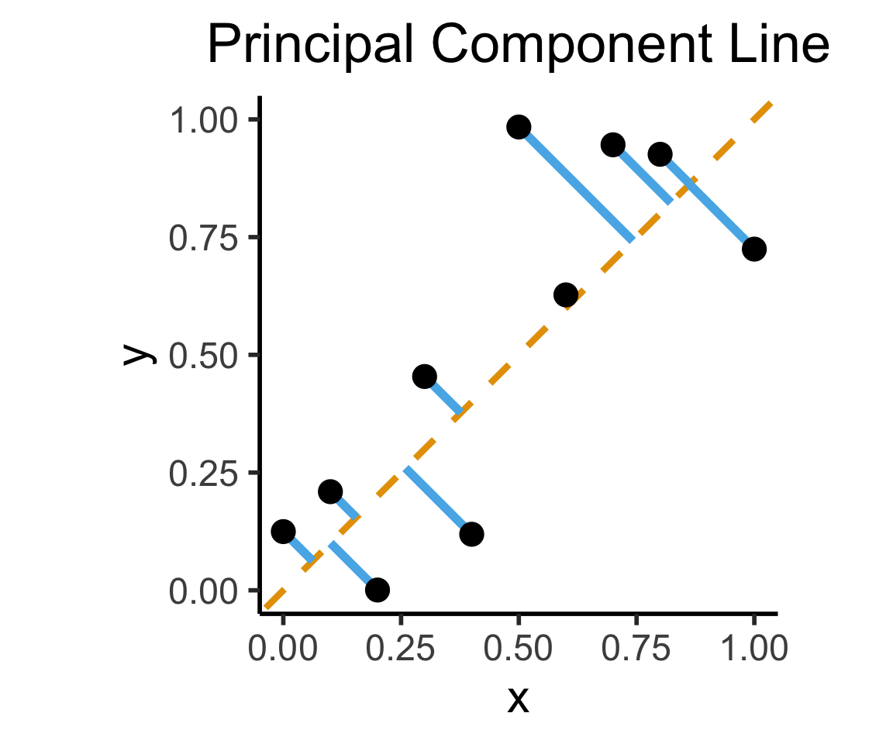

Principal Component Analysis
- Principal Component Line can be used to project the data onto its dimension of highest variance (recap from 5000!)
- More simply: PCA can discover meaningful axes in data (unsupervised learning / exploratory data analysis settings)
Create Your Own Dimension!
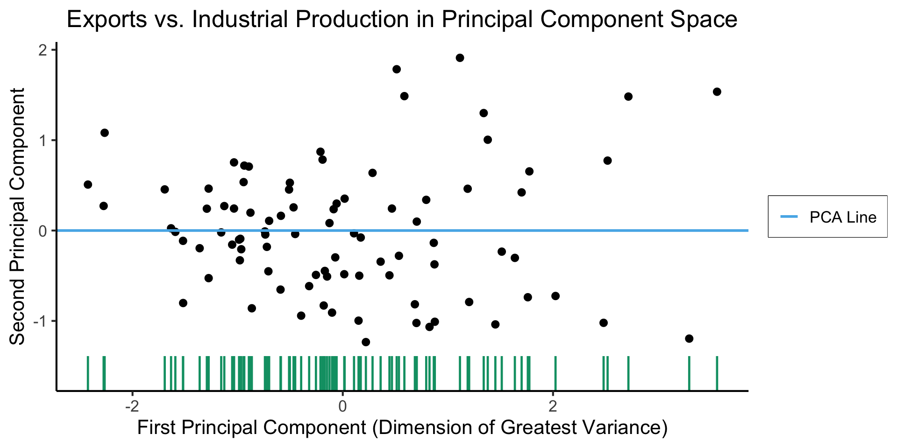
…And Use It for EDA
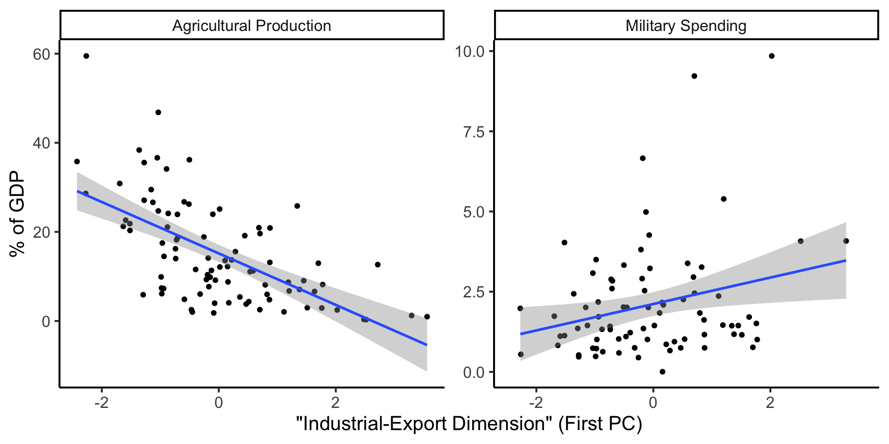
But in Our Case…
- \(x\) and \(y\) dimensions already have meaning, and we have a hypothesis about effect of \(x\) on \(y\)!
The Regression Hypothesis \(\mathcal{H}_{\text{reg}}\)
Given data \((X, Y)\), we estimate \(\widehat{y} = \widehat{\beta}_0 + \widehat{\beta}_1x\), hypothesizing that:
- Starting from \(y = \underbrace{\widehat{\beta}_0}_{\mathclap{\text{Intercept}}}\) when \(x = 0\),
- An increase of \(x\) by 1 unit is associated with an increase of \(y\) by \(\underbrace{\widehat{\beta}_1}_{\mathclap{\text{Coefficient}}}\) units
- We want to measure how well our line predicts \(y\) for any given \(x\) value \(\implies\) vertical distance from regression line
Example: Advertising Effects
- Independent variable: $ put into advertisements; Dependent variable: Sales
- Goal 1: Predict sales for a given allocation
- Goal 2: Infer best allocation for a given advertising budget (more simply: a new $1K appears! Where should we invest it?)
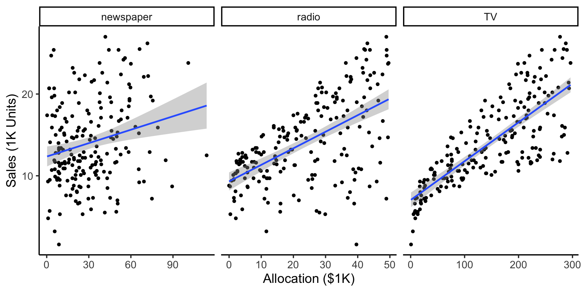
Simple Linear Regression
- For now, we treat Newspaper, Radio, TV advertising separately: how much do sales increase per $1 into [medium]? (Later we’ll consider them jointly: multiple regression)
Our model:
\[ Y = \underbrace{\param{\beta_0}}_{\mathclap{\text{Intercept}}} + \underbrace{\param{\beta_1}}_{\mathclap{\text{Slope}}}X + \varepsilon \]
…Generates predictions via:
\[ \widehat{y} = \underbrace{\widehat{\beta}_0}_{\mathclap{\small\begin{array}{c}\text{Estimated} \\[-5mm] \text{intercept}\end{array}}} ~+~ \underbrace{\widehat{\beta}_1}_{\mathclap{\small\begin{array}{c}\text{Estimated} \\[-4mm] \text{slope}\end{array}}}\cdot x \]
- Note how these predictions will be wrong (unless the data is perfectly linear)
- We’ve accounted for this in our model (by including \(\varepsilon\) term)!
- But, we’d like to find estimates \(\widehat{\beta}_0\) and \(\widehat{\beta}_1\) that produce the “least wrong” predictions: motivates focus on residuals \(\widehat{\varepsilon}_i\)…
\[ \widehat{\varepsilon}_i = \underbrace{y_i}_{\mathclap{\small\begin{array}{c}\text{Real} \\[-5mm] \text{label}\end{array}}} - \underbrace{\widehat{y}_i}_{\mathclap{\small\begin{array}{c}\text{Predicted} \\[-5mm] \text{label}\end{array}}} = \underbrace{y_i}_{\mathclap{\small\begin{array}{c}\text{Real} \\[-5mm] \text{label}\end{array}}} - \underbrace{ \left( \widehat{\beta}_0 + \widehat{\beta}_1 \cdot x \right) }_{\text{\small{Predicted label}}} \]
Least Squares: Minimizing Residuals
What can we optimize to ensure these residuals are as small as possible?
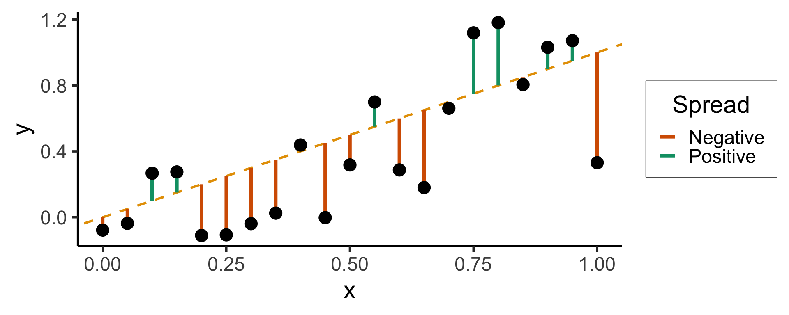
Sum?
0.0000000000Sum of Squares?
3.8405017200Sum of absolute vals?
7.6806094387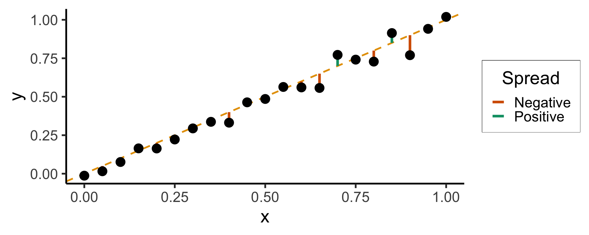
Sum?
0.0000000000Sum of Squares?
1.9748635217Sum of absolute vals?
5.5149697440Why Not Absolute Value?
- Two feasible ways to prevent positive and negative residuals cancelling out:
- Absolute error \(\left|y - \widehat{y}\right|\) or squared error \(\left( y - \widehat{y} \right)^2\)
- But remember: we’re aiming to minimize 👀 these residuals; ghost of calculus past 😱
- We minimize by taking derivatives… which one is differentiable everywhere?
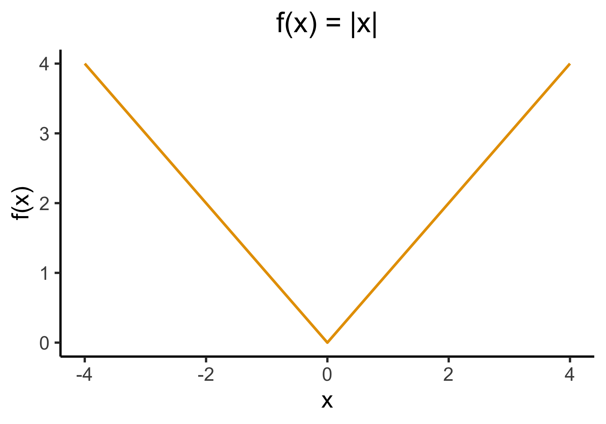
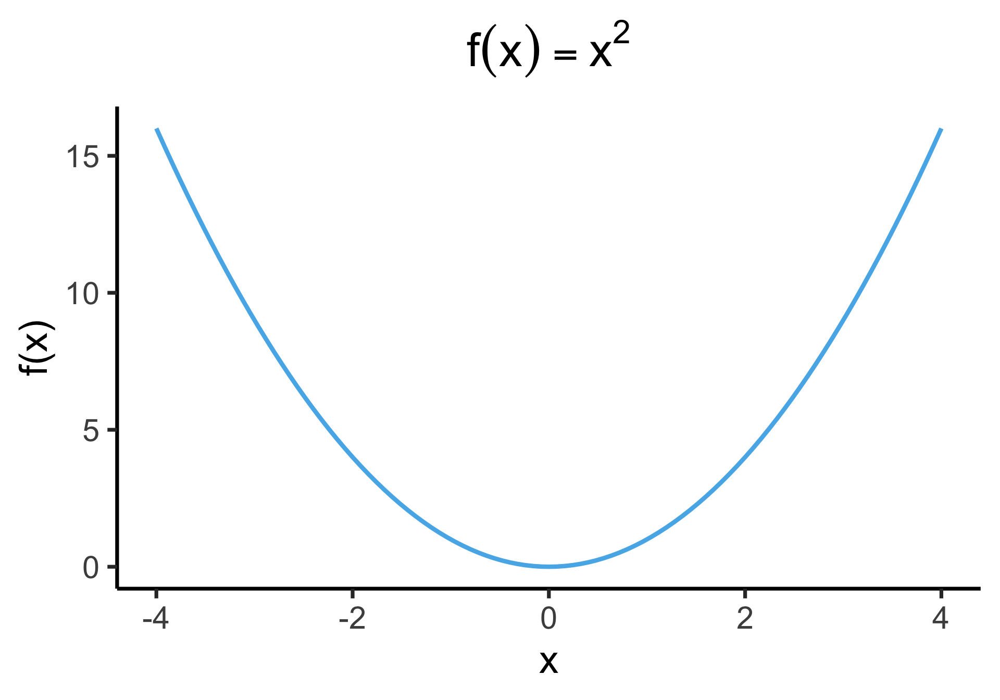
Outliers Penalized Quadratically
- May feel arbitrary at first (we’re “forced” to use squared error because of calculus?)
- It also has important consequences for “learnability” via gradient descent!
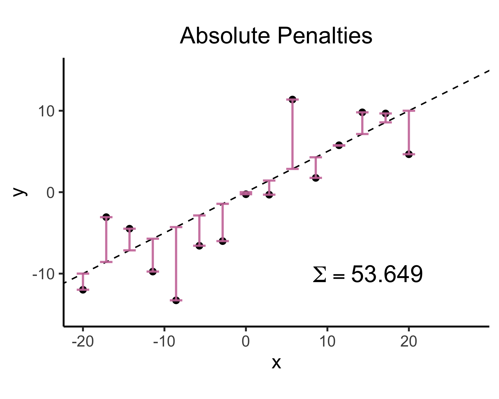
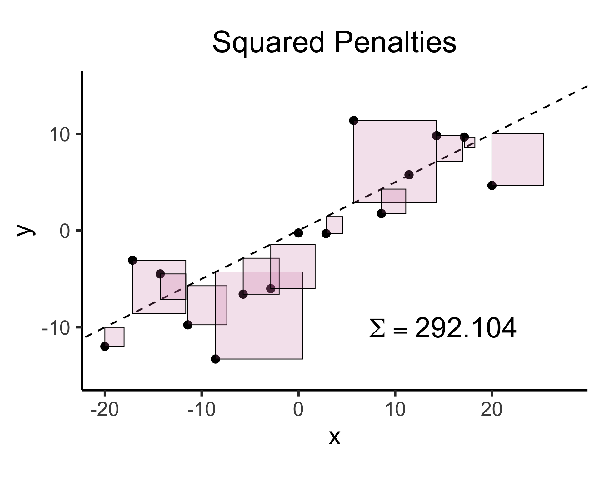
Key Features of Regression Line
- Regression line is BLUE: Best Linear Unbiased Estimator
- What exactly is it the “best” linear estimator of?
\[ \widehat{y} = \underbrace{\widehat{\beta}_0}_{\mathclap{\small\begin{array}{c}\text{Estimated} \\[-5mm] \text{intercept}\end{array}}} ~+~ \underbrace{\widehat{\beta}_1}_{\mathclap{\small\begin{array}{c}\text{Estimated} \\[-4mm] \text{slope}\end{array}}}\cdot x \]
is chosen so that
\[ \widehat{\theta} = \left(\widehat{\beta}_0, \widehat{\beta}_1\right) = \argmin_{\beta_0, \beta_1}\left[ \sum_{x_i \in X} \left(~~\overbrace{\widehat{y}(x_i)}^{\mathclap{\small\text{Predicted }y}} - \overbrace{\expect{Y \mid X = x_i}}^{\small \text{Avg. }y\text{ when }x = x_i}\right)^{2~} \right] \]
Where Did That \(\mathbb{E}[Y \mid X = x_i]\) Come From?
- From our assumption that the irreducible errors \(\varepsilon_i\) are normally distributed \(\mathcal{N}(0, \sigma^2)\)

- Kind of an immensely important point, since it gives us a hint for checking whether model assumptions hold: spread around the regression line should be \(\mathcal{N}(0, \sigma^2)\)
Heteroskedasticity
- If spread increases or decreases for larger \(x\), for example, then \(\varepsilon \nsim \mathcal{N}(0, \sigma^2)\)

Figure 3.11 from James et al. (2023)
But… What About Other Types of Vars?
- 5000: you saw nominal, ordinal, cardinal vars
- 5100: you wrestled with discrete vs. continuous RVs
- Good News #1: Regression can handle all these types+more!
- Good News #2: Distinctions between classification and regression diminish as you learn fancier regression methods!
- tldr: Predict continuous probabilities \(\Pr(Y) \in [0,1]\) (regression), then guess 1 if \(\Pr(Y) > 0.5\) (classification)
- By end of 5300 you should have something on your toolbelt for handling most cases like “I want to do [regression / classification], but my data is [not cardinal+continuous]”
Deriving the Least Squares Estimate
A Sketch (HW is the Full Thing)
- OLS for regression without intercept: Which line through origin best predicts \(Y\)?
- (Good practice + reminder of how restricted linear models are!)
\[ Y = \beta_1 X + \varepsilon \]
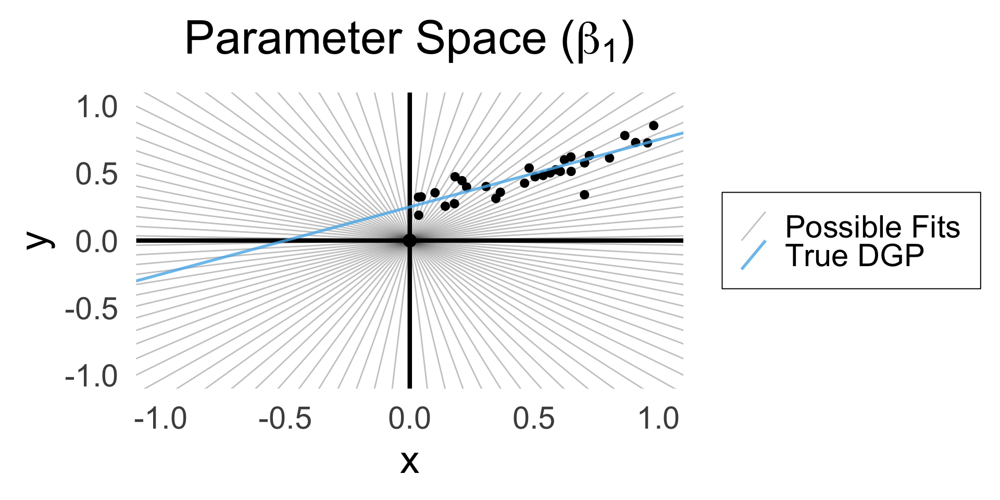
Evaluating with Residuals

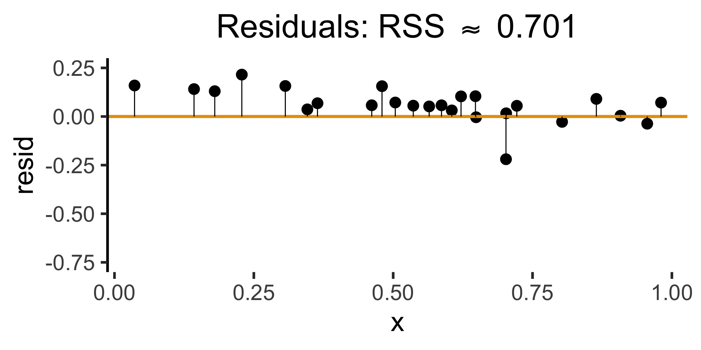
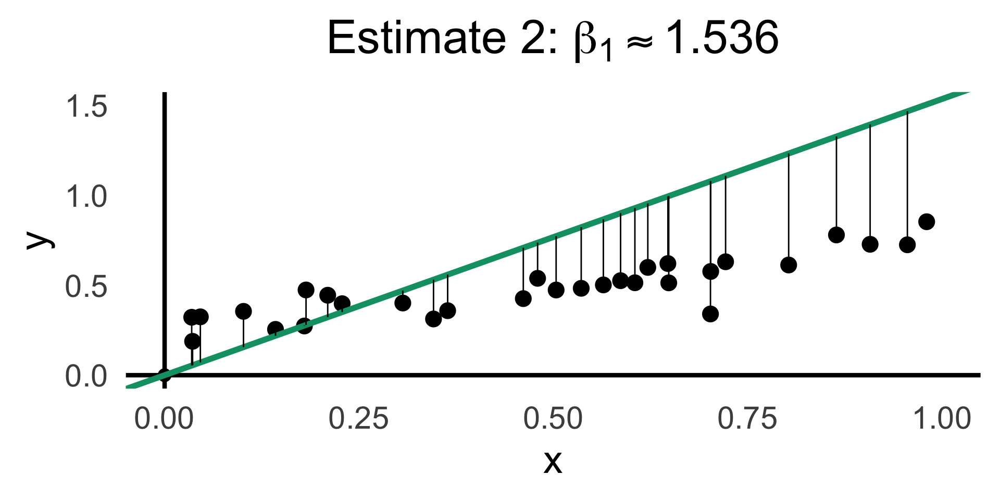
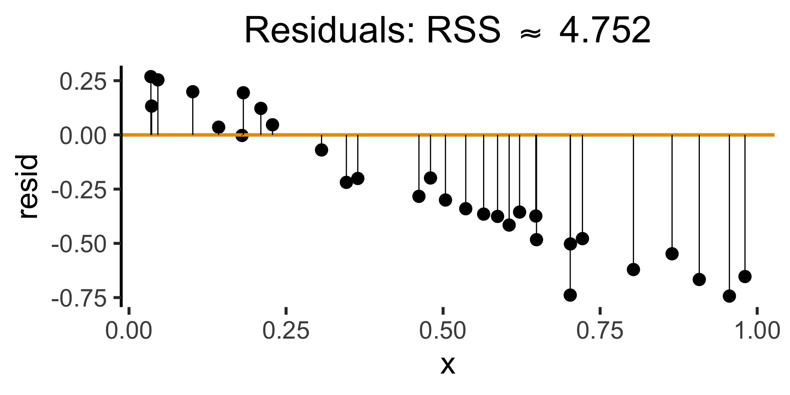
Now the Math
\[ \begin{align*} \beta_1^* = \overbrace{\argmin}^{\begin{array}{c} \text{\small{Find thing}} \\[-5mm] \text{\small{that minimizes}}\end{array}}_{\beta_1}\left[ \sum_{i=1}^{n}(y_i - \widehat{y}_i)^2 \right] = \argmin_{\beta_1}\left[ \sum_{i=1}^{n}(y_i - \beta_1x_i)^2 \right] \end{align*} \]
We can compute this derivative to obtain:
\[ \frac{\partial}{\partial\beta_1}\left[ \sum_{i=1}^{n}(\beta_1x_i - y_i)^2 \right] = \sum_{i=1}^{n}\frac{\partial}{\partial\beta_1}(\beta_1x_i - y_i)^2 = \sum_{i=1}^{n}2(\beta_1x_i - y_i)x_i \]
And our first-order condition means that:
\[ \sum_{i=1}^{n}2(\beta_1^*x_i - y_i)x_i = 0 \iff \beta_1^*\sum_{i=1}^{n}x_i^2 = \sum_{i=1}^{n}x_iy_i \iff \boxed{\beta_1^* = \frac{\sum_{i=1}^{n}x_iy_i}{\sum_{i=1}^{n}x_i^2}} \]
Doing Things With Regression
Regression: R vs. statsmodels
lm()
Call:
lm(formula = sales ~ TV, data = ad_df)
Residuals:
Min 1Q Median 3Q Max
-8.3860 -1.9545 -0.1913 2.0671 7.2124
Coefficients:
Estimate Std. Error t value Pr(>|t|)
(Intercept) 7.032594 0.457843 15.36 <2e-16 ***
TV 0.047537 0.002691 17.67 <2e-16 ***
---
Signif. codes: 0 '***' 0.001 '**' 0.01 '*' 0.05 '.' 0.1 ' ' 1
Residual standard error: 3.259 on 198 degrees of freedom
Multiple R-squared: 0.6119, Adjusted R-squared: 0.6099
F-statistic: 312.1 on 1 and 198 DF, p-value: < 2.2e-16General syntax:
smf.ols()
Code
OLS Regression Results
==============================================================================
Dep. Variable: sales R-squared: 0.612
Model: OLS Adj. R-squared: 0.610
No. Observations: 200 F-statistic: 312.1
Covariance Type: nonrobust Prob (F-statistic): 1.47e-42
==============================================================================
coef std err t P>|t| [0.025 0.975]
------------------------------------------------------------------------------
Intercept 7.0326 0.458 15.360 0.000 6.130 7.935
TV 0.0475 0.003 17.668 0.000 0.042 0.053
==============================================================================
Notes:
[1] Standard Errors assume that the covariance matrix of the errors is correctly specified.General syntax:
Interpreting Output
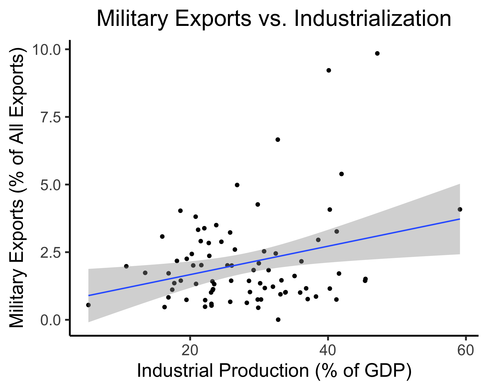
Call:
lm(formula = military ~ industrial, data = gdp_df)
Residuals:
Min 1Q Median 3Q Max
-2.3354 -1.0997 -0.3870 0.6081 6.7508
Coefficients:
Estimate Std. Error t value Pr(>|t|)
(Intercept) 0.61969 0.59526 1.041 0.3010
industrial 0.05253 0.02019 2.602 0.0111 *
---
Signif. codes: 0 '***' 0.001 '**' 0.01 '*' 0.05 '.' 0.1 ' ' 1
Residual standard error: 1.671 on 79 degrees of freedom
(8 observations deleted due to missingness)
Multiple R-squared: 0.07895, Adjusted R-squared: 0.06729
F-statistic: 6.771 on 1 and 79 DF, p-value: 0.01106Zooming In: Coefficients
| Estimate | Std. Error | t value | Pr(>|t|) | ||
|---|---|---|---|---|---|
| (Intercept) | 0.61969 | 0.59526 | 1.041 | 0.3010 | |
| industrial | 0.05253 | 0.02019 | 2.602 | 0.0111 | * |
| \(\widehat{\beta}\) | Uncertainty | Test stat \(t\) | How extreme is \(t\)? | Signif. Level |
\[ \widehat{y} \approx \class{cb1}{\overset{\beta_0}{\underset{\small \pm 0.595}{0.620}}} + \class{cb2}{\overset{\beta_1}{\underset{\small \pm 0.020}{0.053}}} \cdot x \]
Zooming In: Significance
| Estimate | Std. Error | t value | Pr(>|t|) | ||
|---|---|---|---|---|---|
| (Intercept) | 0.61969 | 0.59526 | 1.041 | 0.3010 | |
| industrial | 0.05253 | 0.02019 | 2.602 | 0.0111 | * |
| \(\widehat{\beta}\) | Uncertainty | Test stat \(t\) | How extreme is \(t\)? | Signif. Level |
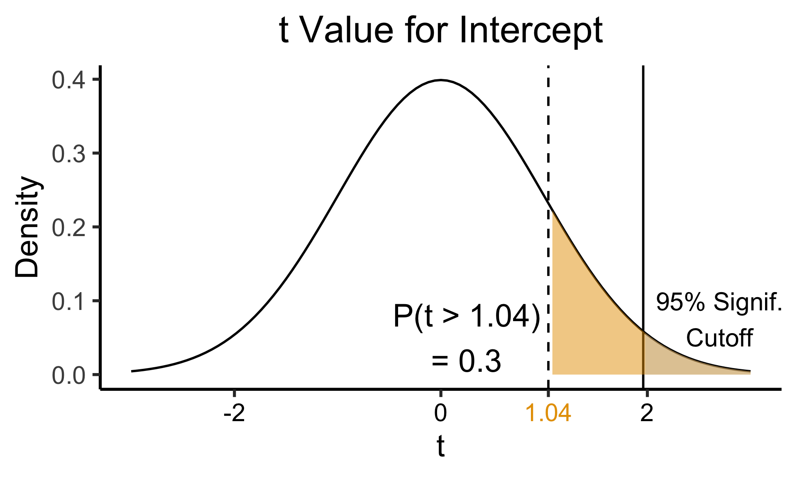
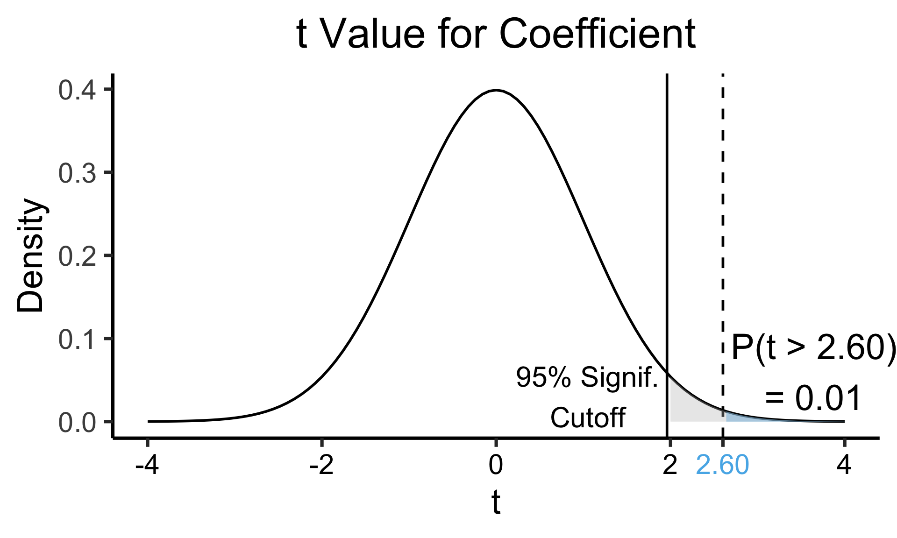
The Residual Plot
Recall homoskedasticity assumption: Given our model
\[ y_i = \beta_0 + \beta_1x_i + \varepsilon_i \]
the errors \(\varepsilon_i\) should not vary systematically with \(i\)
Formally: \(\forall i \left[ \Var{\varepsilon_i} = \sigma^2 \right]\)
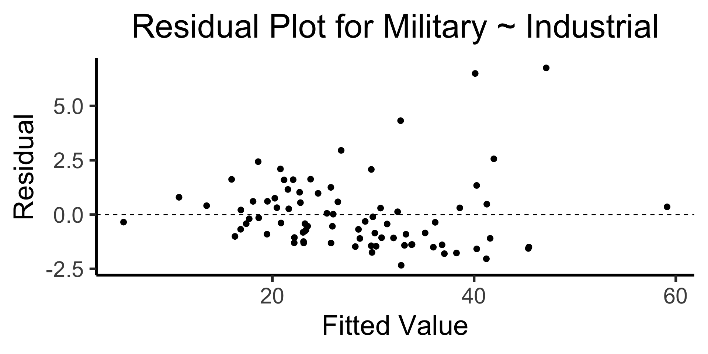
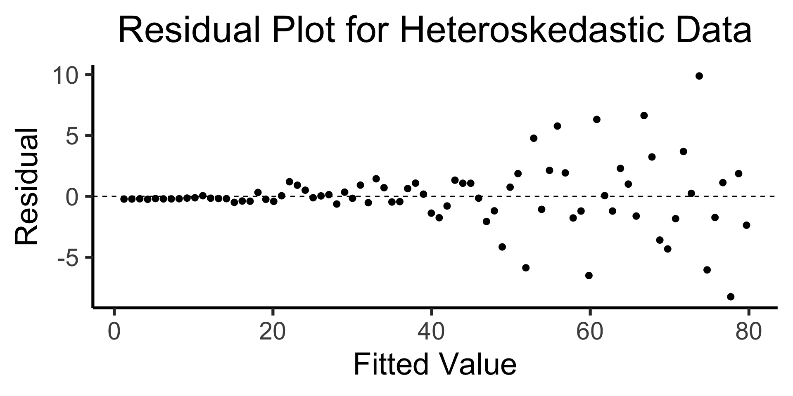
Q-Q Plot
- If \((\widehat{y} - y) \sim \mathcal{N}(0, \sigma^2)\), points would lie on 45° line:
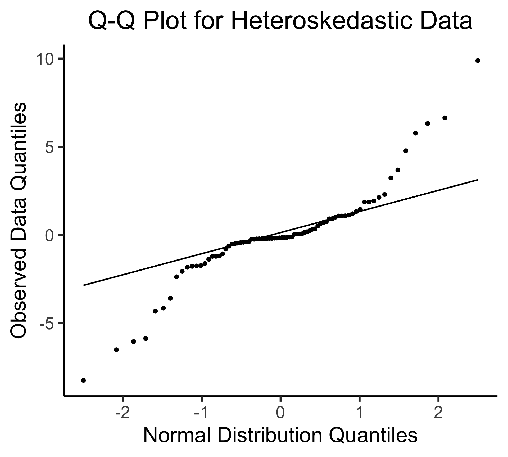
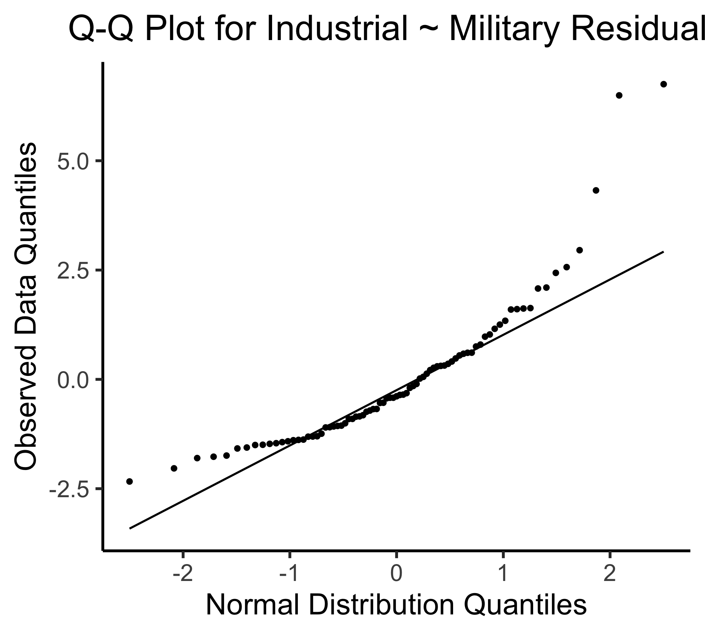
Multiple Linear Regression
- Notation: \(x_{i,j}\) = value of independent variable \(j\) for person/observation \(i\)
- \(M\) = total number of independent variables
\[ \widehat{y}_i = \beta_0 + \beta_1x_{i,1} + \beta_2x_{i,2} + \cdots + \beta_M x_{i,M} \]
- \(\beta_j\) interpretation: a one-unit increase in \(x_{i,j}\) is associated with a \(\beta_j\) unit increase in \(y_i\), holding all other independent variables constant
Visualizing Multiple Linear Regression

(ISLR Fig 3.5): A pronounced non-linear relationship. Positive residuals (visible above the surface) tend to lie along the 45° line, where budgets are split evenly. Negative residuals (most not visible) tend to be away from this line, where budgets are more lopsided.
Interpreting MLR
Call:
lm(formula = sales ~ TV + radio + newspaper, data = ad_df)
Residuals:
Min 1Q Median 3Q Max
-8.8277 -0.8908 0.2418 1.1893 2.8292
Coefficients:
Estimate Std. Error t value Pr(>|t|)
(Intercept) 2.938889 0.311908 9.422 <2e-16 ***
TV 0.045765 0.001395 32.809 <2e-16 ***
radio 0.188530 0.008611 21.893 <2e-16 ***
newspaper -0.001037 0.005871 -0.177 0.86
---
Signif. codes: 0 '***' 0.001 '**' 0.01 '*' 0.05 '.' 0.1 ' ' 1
Residual standard error: 1.686 on 196 degrees of freedom
Multiple R-squared: 0.8972, Adjusted R-squared: 0.8956
F-statistic: 570.3 on 3 and 196 DF, p-value: < 2.2e-16Holding radio and newspaper spending constant…
- An increase of $1K in spending on
TVads is associated with… - An increase in sales of 46 units
Holding TV and newspaper spending constant…
- An increase of $1K in spending on
radioads is associated with… - An increase in sales of 189 units
But Wait…
\[ \texttt{sales} = \overset{*}{\beta_0} + \overset{*}{\beta_1}\texttt{newspaper} \]
Estimate Std. Error t value Pr(>|t|)
(Intercept) 12.351407 0.621420 19.8761 < 2.2e-16 ***
newspaper 0.054693 0.016576 3.2996 0.001148 **
---
Signif. codes: 0 '***' 0.001 '**' 0.01 '*' 0.05 '.' 0.1 ' ' 1\[ \texttt{sales} = \overset{*}{\beta_0} + \overset{*}{\beta_1}\texttt{TV} + \overset{*}{\beta_2}\texttt{radio} + \overset{(~~)}{\beta_3}\texttt{paper} \]
Estimate Std. Error t value Pr(>|t|)
(Intercept) 2.9388894 0.3119082 9.4223 <2e-16 ***
TV 0.0457646 0.0013949 32.8086 <2e-16 ***
radio 0.1885300 0.0086112 21.8935 <2e-16 ***
newspaper -0.0010375 0.0058710 -0.1767 0.8599
---
Signif. codes: 0 '***' 0.001 '**' 0.01 '*' 0.05 '.' 0.1 ' ' 1newspaper\(\overset{*}{\rightarrow}\)salesin SLR, butnewspaper\(\overset{*}{\not\rightarrow}\)salesin MLR?- Correlations \(\Rightarrow\) MLR results can be drastically different from SLR results
- This is a good thing! It’s how we’re able to control for confounding vars!
Correlations Among Features
TV radio newspaper sales
TV 1.00000000 0.05480866 0.05664787 0.7822244
radio 0.05480866 1.00000000 0.35410375 0.5762226
newspaper 0.05664787 0.35410375 1.00000000 0.2282990
sales 0.78222442 0.57622257 0.22829903 1.0000000- Observe how \(\text{cor}(\texttt{radio}, \texttt{newspaper}) \approx 0.35\) (highest feat-feat correlation)
- In markets where we spend more on
radioour sales will tend to be higher… - Corr matrix \(\implies\) we spend more on
newspaperin those same markets… - In SLR which only examines
salesvs.newspaper, we (correctly!) observe that higher values ofnewspaperare associated with higher values ofsales… - In essence,
newspaperadvertising is a surrogate forradioadvertising \(\implies\) in our SLR,newspaper“gets credit” for the association betweenradioandsales
Regression Superpower: Incorporating Categorical Vars
(Preview for next week)
\[ Y = \beta_0 + \beta_1 \times \texttt{income} \]
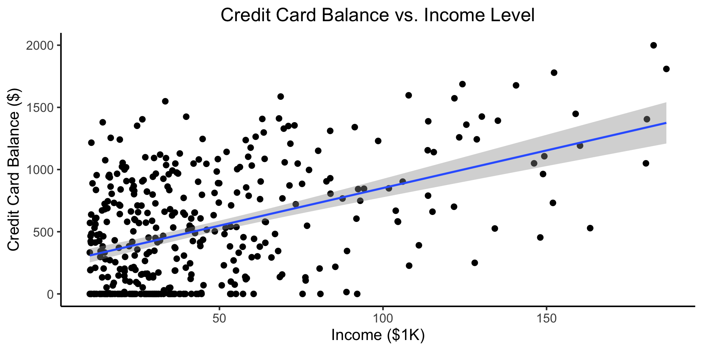
\[ \begin{align*} Y = &\beta_0 + \beta_1 \times \texttt{income} + \beta_2 \times \texttt{Student} \\ &+ \beta_3 \times (\texttt{Student} \times \texttt{Income}) \end{align*} \]
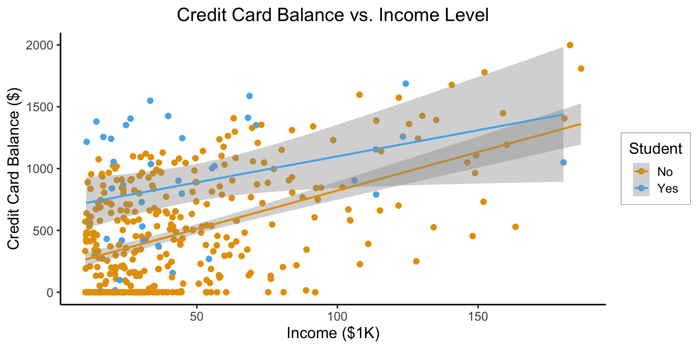
- How does the \(\texttt{Student} \times \texttt{Income}\) term help?
- Understanding this setup will open up a vast array of possibilities for regression 😎
Quiz Review
Objective Functions
“Fitting” a statistical model to data means minimizing some loss function that measures “how bad” our predictions are:
Optimization Problems: General Form
Find \(x^*\), the solution to
\[ \begin{align} \min_{x} ~ & f(x) &\text{(Objective function)} \\ \text{s.t. } ~ & g(x) = 0 &\text{(Constraints)} \end{align} \]
- Earlier we were able to write \(x^* = \argmax_x{f(x)}\), since there were no constraints. Is there a way to write a formula like this with constraints?
- Answer: Yes! Thx Giuseppe-Luigi Lagrangia = Joseph-Louis Lagrange:
\[ x^* = \argmax_{x,~\lambda}f(x) - \lambda[g(x)] \]
Example Problem
Example 1: Unconstrained Optimization
Find \(x^*\), the solution to
\[ \begin{align} \min_{x} ~ & f(x) = 3x^2 - x \\ \text{s.t. } ~ & \varnothing \end{align} \]
Our Plan
- Compute the derivative \(f'(x) = \frac{\partial}{\partial x}f(x)\),
- Set it equal to zero: \(f'(x) = 0\), and
- Solve this equality for \(x\), i.e., find values \(x^*\) satisfying \(f'(x^*) = 0\)
Computing the derivative:
\[ f'(x) = \frac{\partial}{\partial x}f(x) = \frac{\partial}{\partial x}\left[3x^2 - x\right] = 6x - 1, \]
Solving for \(x^*\), the value(s) satisfying \(\frac{\partial}{\partial x}f'(x^*) = 0\) for just-derived \(f'(x)\):
\[ f'(x^*) = 0 \iff 6x^* - 1 = 0 \iff x^* = \frac{1}{6}. \]
Derivative Cheatsheet
| Type of Thing | Thing | Change in Thing when \(x\) Changes by Tiny Amount |
|---|---|---|
| Polynomial | \(f(x) = x^n\) | \(f'(x) = \frac{\partial}{\partial x}f(x) = nx^{n-1}\) |
| Fraction | \(f(x) = \frac{1}{x}\) | Use Polynomial rule (since \(\frac{1}{x} = x^{-1}\)) to get \(f'(x) = -\frac{1}{x^2}\) |
| Logarithm | \(f(x) = \ln(x)\) | \(f'(x) = \frac{\partial}{\partial x} = \frac{1}{x}\) |
| Exponential | \(f(x) = e^x\) | \(f'(x) = \frac{\partial}{\partial x}e^x = e^x\) (🧐❗️) |
| Multiplication | \(f(x) = g(x)h(x)\) | \(f'(x) = g'(x)h(x) + g(x)h'(x)\) |
| Division | \(f(x) = \frac{g(x)}{h(x)}\) | Too hard to memorize… turn it into Multiplication, as \(f(x) = g(x)(h(x))^{-1}\) |
| Composition (Chain Rule) | \(f(x) = g(h(x))\) | \(f'(x) = g'(h(x))h'(x)\) |
| Fancy Logarithm | \(f(x) = \ln(g(x))\) | \(f'(x) = \frac{g'(x)}{g(x)}\) by Chain Rule |
| Fancy Exponential | \(f(x) = e^{g(x)}\) | \(f'(x) = g'(x)e^{g(x)}\) by Chain Rule |
References
Gelman, Andrew, and Jennifer Hill. 2007. Data Analysis Using Regression and Multilevel/Hierarchical Models. Cambridge University Press. https://www.dropbox.com/scl/fi/asbumi3g0gqa4xl9va7wp/Andrew-Gelman-Jennifer-Hill-Data-Analysis-Using-Regression-and-Multilevel_Hierarchical-Models.pdf?rlkey=zf8icjhm7rswvxrpm7d10m65o&dl=1.
James, Gareth, Daniela Witten, Trevor Hastie, Robert Tibshirani, and Jonathan Taylor. 2023. An Introduction to Statistical Learning: With Applications in Python. Springer Nature. https://books.google.com?id=ygzJEAAAQBAJ.
DSAN 5300 Week 2: Logistic Regression